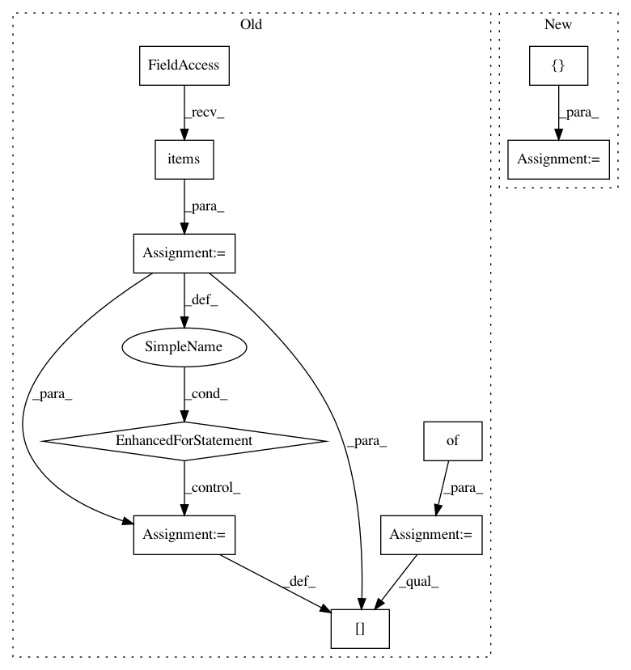

9a2f08733fbbbac28da5dba88cadbdcd021f412b,lazyflow/operator.py,Operator,handleInputBecameUnready,#Operator#Any#,486
Before Change
// Keep track of the old ready statuses so we know if
// something changed
readyFlags = {}
for k, oslot in self.outputs.items():
readyFlags[k] = oslot.meta._ready
// All unconnected outputs are no longer ready
for oslot in self.outputs.values():
oslot.meta._ready &= (oslot.partner is not None)
// If the ready status changed, signal it.
After Change
if slot._optional:
return
newly_unready_slots = []
def setunready(s):
for ss in s._subSlots:
setunready(ss)
was_ready = s.meta._ready
In pattern: SUPERPATTERN
Frequency: 3
Non-data size: 10
Instances
Project Name: ilastik/ilastik
Commit Name: 9a2f08733fbbbac28da5dba88cadbdcd021f412b
Time: 2014-08-22
Author: bergs@janelia.hhmi.org
File Name: lazyflow/operator.py
Class Name: Operator
Method Name: handleInputBecameUnready
Project Name: arviz-devs/arviz
Commit Name: d55bad55b6a9e97f800c97c73038bc5ed8d4b31f
Time: 2018-11-03
Author: ahartikainen@users.noreply.github.com
File Name: arviz/data/io_pystan.py
Class Name: PyStanConverter
Method Name: observed_data_to_xarray
Project Name: ilastik/ilastik
Commit Name: d40f6897462529dc4fece406c810834127f9a803
Time: 2014-08-19
Author: bergs@janelia.hhmi.org
File Name: lazyflow/operator.py
Class Name: Operator
Method Name: handleInputBecameUnready